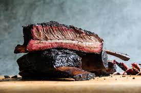

Beef BBQ Ribs

Description
These smoky and tender beef BBQ ribs are the perfect combination of succulent, fall-off-the-bone meat and rich, smoky flavors. The ribs are first marinated in a flavorful blend of spices, brown sugar, and apple cider vinegar, then slow-cooked on the grill to create a juicy, tender, and mouthwatering dish that's perfect for any barbecue or outdoor gathering.
Ingredients
- 4 pounds beef ribs, separated into individual ribs
- 1/2 cup brown sugar
- 2 tablespoons paprika
- 1 tablespoon garlic powder
- 1 tablespoon onion powder
- 1 tablespoon ground cumin
- 1 tablespoon kosher salt
- 1 tablespoon black pepper
- 1/4 teaspoon cayenne pepper (optional, for a spicy kick)
- 1/4 cup apple cider vinegar
- 1/4 cup Worcestershire sauce
- 1/4 cup extra virgin olive oil
- 2 cups BBQ sauce of your choice (for basting and serving)
Steps
- In a medium-sized bowl, combine the brown sugar, paprika, garlic powder, onion powder, ground cumin, kosher salt, black pepper, and cayenne pepper (if using) to create the dry rub.
- In a separate small bowl, whisk together the apple cider vinegar, Worcestershire sauce, and extra virgin olive oil to make the marinade.
- Pat the beef ribs dry with paper towels and arrange them on a large tray or baking sheet.
- Rub the dry spice mixture evenly onto both sides of the ribs, ensuring that they are fully coated.
- Drizzle the marinade over the ribs, and using your hands, massage it into the meat. Make sure the ribs are well-coated with the marinade.
- Cover the tray with plastic wrap and refrigerate the ribs for at least 4 hours, or preferably overnight, to allow the flavors to penetrate the meat.
- Preheat your grill to medium-low heat (around 250°F or 120°C). If using a charcoal grill, arrange the coals for indirect grilling.
- Remove the ribs from the refrigerator and let them come to room temperature for about 30 minutes.
- Place the ribs on the grill, bone-side down, over indirect heat. Close the lid and cook for 2.5 to 3 hours, turning the ribs occasionally to ensure even cooking.
- During the last 30 minutes of grilling, baste the ribs with your chosen BBQ sauce, turning and basting every 10 minutes to build up a nice glaze.
- The ribs are done when they are tender and the meat easily pulls away from the bone. Check the internal temperature using a meat thermometer; it should read around 190°F or 88°C.
- Remove the ribs from the grill and let them rest for 10 minutes before slicing into individual pieces.
- Serve the beef BBQ ribs with additional BBQ sauce on the side and your favorite sides, such as coleslaw, cornbread, or baked beans.
Enjoy your smoky and tender beef BBQ ribs!